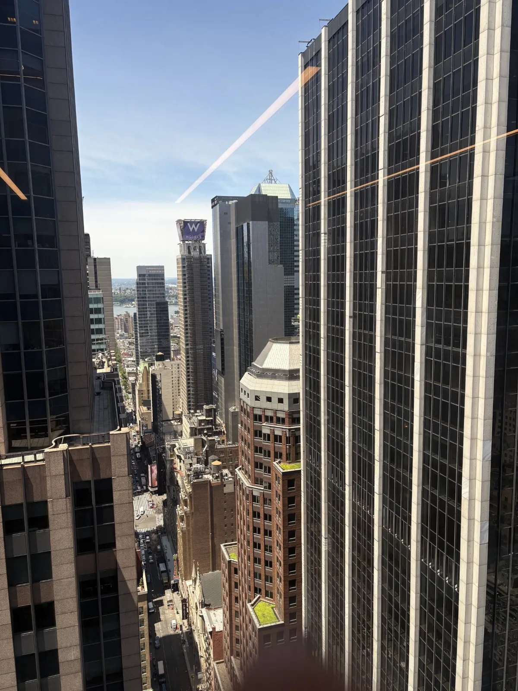

Centralized
accounting memo application
At Marsh, I contributed to full-stack development of a centralized accounting memo application and presented progress to stakeholders and controllers.
A central place
for accounting memos
During my Finance Innovation Technology internship at Marsh, I worked on full-stack development of a centralized accounting memo application.
Frequent presentations to stakeholders and controllers brought the application’s implementation into regular discussion with its business users.

Full-stack development
The work centered on a centralized application for accounting memos, bringing application development into the context of a financial workflow.
Close to the stakeholders
I presented progress and application work frequently to stakeholders and controllers, connecting technical implementation with the people responsible for the accounting process.